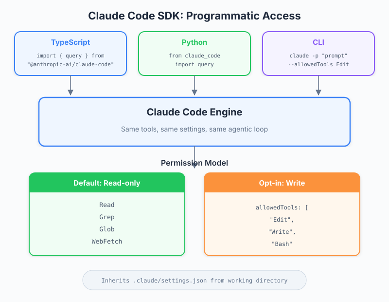

| Item | Detail |
|---|---|
| Exam Domain | D2 — Tool Integration & MCP (20%), D3 — Claude Code Configuration & Workflows (20%), D1 — Agentic Architecture (27%) |
| Task Statements | 2.4 (MCP integration — SDK extends Claude Code programmatically), 3.6 (CI/CD integration — SDK enables automated workflows), 1.1 (agentic loops — SDK runs full agentic loops programmatically) |
| Source | claude-code-in-action / 06-sdk-and-wrap-up / Lesson 20 |
The Claude Code SDK lets you run Claude Code programmatically from TypeScript, Python, or CLI — inheriting all settings and permissions — with a read-only default that requires explicit allowedTools grants for write access, making it the bridge between interactive Claude Code and automated pipelines.

Claude Code in the terminal is interactive — a human types prompts and reviews responses. The SDK removes the human from the loop: your code sends prompts and processes responses programmatically.
Key insight: the SDK is not a separate product. It runs the exact same Claude Code under the hood, meaning:
CLAUDE.md files.claude/settings.json permissions💡 Key Insight
The SDK is Claude Code without the terminal UI. Same engine, same configuration, same capabilities — different interface.
The SDK is available through three interfaces:
import { query } from "@anthropic-ai/claude-code";
const messages = await query({
prompt: "What duplicate queries exist in this project?",
options: {
maxTurns: 10,
},
});
for await (const message of messages) {
if (message.type === "text") {
console.log(message.content);
}
}
import subprocess
import json
result = subprocess.run(
["claude", "--print", "--output-format", "json", "Find duplicate queries"],
capture_output=True, text=True
)
response = json.loads(result.stdout)
echo "Find duplicate queries" | claude --print --output-format json
🎬 Instructor insight from the video
The instructor demonstrates the TypeScript SDK first because it provides the richest API with async iteration over messages. Python and CLI work via subprocess calls to theclaudeCLI binary.
This is the most important security concept in the SDK:
// DEFAULT: Claude can only READ files, not modify them
const messages = await query({
prompt: "Analyze this codebase",
});
// EXPLICIT WRITE: Must specify allowedTools
const messages = await query({
prompt: "Add a test script to package.json",
options: {
allowedTools: ["Edit", "Write", "Bash"],
},
});
Why read-only by default? When running programmatically (no human in the loop), there is no one to approve risky actions. The SDK defaults to the safest posture.
| Permission Level | What Claude Can Do | Use Case |
|---|---|---|
Default (no allowedTools) |
Read files, analyze code, answer questions | Code review, analysis, documentation queries |
allowedTools: ["Edit"] |
Read + modify existing files | Automated refactoring, code fixes |
allowedTools: ["Edit", "Write"] |
Read + modify + create files | Code generation, scaffolding |
allowedTools: ["Edit", "Write", "Bash"] |
Full access including shell commands | CI/CD pipelines, build automation |
🎯 Exam Note
The principle of least privilege applies: grant only the tools the SDK invocation actually needs. A code review pipeline should NOT haveBashaccess.
The core pattern is: import -> query -> iterate
import { query } from "@anthropic-ai/claude-code";
// 1. Send a prompt (starts an agentic loop)
const conversation = await query({
prompt: "Find all duplicate database queries in src/",
options: {
maxTurns: 10, // Limit agentic loop iterations
allowedTools: [], // Read-only (default)
},
});
// 2. Iterate over messages asynchronously
for await (const message of conversation) {
switch (message.type) {
case "text":
console.log("Claude says:", message.content);
break;
case "tool_use":
console.log("Claude used tool:", message.name);
break;
case "error":
console.error("Error:", message.content);
break;
}
}
The query() function returns an async iterable — messages stream in as Claude thinks and acts, just like the terminal experience.
💡 Key Insight
maxTurnscontrols how many agentic loop iterations Claude can perform. Each turn may involve multiple tool calls. Setting this too low may prevent Claude from completing complex tasks; too high may cause unnecessary cost.
The SDK's real power emerges in pipeline integration:
// pre-commit hook: check for secrets
const result = await query({
prompt: "Check staged files for hardcoded secrets or API keys",
options: { maxTurns: 5 },
});
// Parse result, exit 1 if secrets found
// Post-build: generate changelog
const result = await query({
prompt: "Compare HEAD with last tag, generate a changelog entry",
options: { maxTurns: 10 },
});
// PR review bot
const result = await query({
prompt: `Review this PR diff for issues:\n${prDiff}`,
options: {
maxTurns: 15,
allowedTools: [], // Read-only for review
},
});
🎬 Instructor insight from the video
The instructor demos a two-step workflow: first calling the SDK in read-only mode to find duplicate queries, then calling it again withallowedTools: ["Edit"]to modifypackage.json. This illustrates the progressive permission escalation pattern.
The SDK inherits all settings from .claude/settings.json:
{
"permissions": {
"allow": ["Read", "Glob", "Grep"],
"deny": ["Bash(rm *)"]
}
}
Even if your SDK code passes allowedTools: ["Bash"], the deny rules in settings still apply. This is defense in depth:
allowedTools — what the caller grants.claude/settings.json — what the project allows🎯 Exam Note
SDK permissions are the intersection of what the caller grants (allowedTools) and what the settings allow. If settings denyBash(rm *), the SDK cannot runrmeven withallowedTools: ["Bash"].
| Concept | Key Point | Exam Relevance |
|---|---|---|
| SDK Purpose | Run Claude Code programmatically without terminal UI | D1 1.1 — agentic loops in automation |
| Three Interfaces | TypeScript (primary), Python, CLI | D2 2.4 — programmatic tool integration |
| Read-Only Default | No write access unless allowedTools explicitly granted |
D3 3.6 — secure CI/CD integration |
| Settings Inheritance | SDK respects .claude/settings.json and CLAUDE.md |
D3 3.6 — configuration propagation |
| Async Iteration | for await (const msg of conversation) pattern |
D1 1.1 — streaming agentic responses |
| maxTurns | Controls agentic loop depth | D1 1.1 — loop termination control |
| Pipeline Integration | Git hooks, CI/CD, build scripts, automation | D3 3.6 — CI/CD integration |
| # | Front | Back | Memory Anchor |
|---|---|---|---|
| 1 | What is the default permission level of the Claude Code SDK? | Read-only. Write access requires explicit allowedTools grants. |
"No keys, no entry" — SDK defaults to locked doors |
| 2 | What are the three ways to access the Claude Code SDK? | TypeScript (@anthropic-ai/claude-code), Python (subprocess), CLI (pipe mode) |
Three doors to the same room |
| 3 | What does maxTurns control in the SDK? |
The number of agentic loop iterations Claude can perform per query | Like setting a lap limit in a race |
| 4 | Does the SDK respect .claude/settings.json? |
Yes — it inherits all settings, including allow/deny rules | Same engine, same rulebook |
| 5 | How do you grant write access in the TypeScript SDK? | Pass allowedTools: ["Edit", "Write"] in the options |
Explicit keys for explicit doors |
| 6 | What is the recommended permission model for a CI/CD code review pipeline? | Read-only (no allowedTools) — review does not need write access |
Auditor, not editor |
| 7 | What is the core usage pattern of the TypeScript SDK? | Import query -> call with prompt and options -> async iterate over messages |
Import, query, iterate |
| 8 | Why does the SDK default to read-only? | No human in the loop to approve risky actions — principle of least privilege | No supervisor, no scissors |
Your team wants to add an automated code review step to the CI pipeline using the Claude Code SDK. The review should analyze PRs but never modify code. Which configuration is correct?
allowedTools: ["Read", "Grep", "Glob"]allowedTools: [] (or omit the field entirely)allowedTools: ["Edit"] with deny rules in settingsallowedTools: ["Bash"] to run analysis commandsYou are using the SDK to automate dependency updates. Claude needs to read package.json, check for outdated dependencies, and update them. After running, you notice Claude stops after analyzing but before making edits. What is the most likely cause?
maxTurns is set too lowallowedTools for Edit).claude/settings.json denies Write access